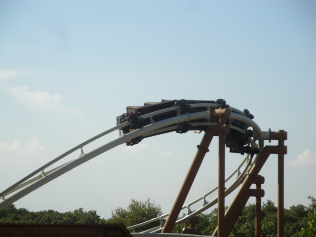
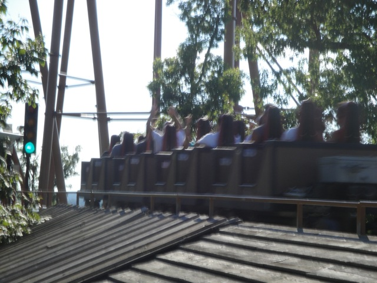

| |
.
Powder Keg Review

We're here at Silver Dollar City. Today's ride we'll be reviewing for you is Powder Keg. After getting in the seats and pulling down the lap bar, we're off!!! You first roll out of the station and onto a peice of track that goes nowhere. But before you can question why that peice of track is here, it begins to move sideways and takes us straight to the launch zone. Here, people are staring at you as you look at the light, waiting to launch. After hearing a whistle, we're off!!! While not the most amazing launch in the world, the Powder Keg launch is pretty damn good and actually manages to take you by surprise if you're not expecting much. That powerful little launch shoots us straight up a small hill, and yeah. EJECTOR AIR!!!!! So yeah, this ride is off to a really great start with a great launch and a great ejector air hill. After dropping down from that hill, we hedad up another hill that has some damn good airtime before dropping back down to the ground. We then go through an overbanked turn that actually has some good laterals. In fact, the overbanked turn here greatly reminds me of the overbank on Bizarro at Six Flags New England as both whip through their overbanks and don't just glide through like Millenium Force and Xcelerator. Anyways, after that fun overbank, we rip through what appears to be another bunny hop. But at the point where, we get airtime, we tilt 90 degrees as this is a strengel dive, giving us the ever so awesome combination of airtime and laterals, a favorite of mine. This strengal dive then spits us out as we then rip through a low to the ground turn that gives us more laterals. After that big turn we turn right in a big sweeping turn. And as we go through this turn, we notice something weird about the track. It's totally different. Well this is all because of the rides history. See, this was originally a water coaster called Buzzsaw Falls, made by Premeir Rides. But for some reason, they wanted to turn it into a regular roller coaster. So they scrapped most of the ride, except for the best parts of the ride, and then built the rest of Powder Keg by S&S Power. So yeah, we're now on Buzzsaw Falls which is now a part of Powder Keg. Very cool. Anyways, this big sweeping turn doesn't have much laterals, it just turns. But hey. It's still cool. And after that, we head into a brake run before we climb up the lifthill. Yeah, this ride is badass in the fact that it has both a launch and a lifthill. Once we reach the top, we get a nice view of the top of lots of trees as well as see Wildfire poking out from the trees. We then roll around a turn before heading down a big drop. Yeah, we've gained a sh*tload of speed and are hauling ass. We then rise up a small hill as we SLAM into a turnaround that gives us A LOT of laterals but just like that, we roll into the brake run, wasting all of the speed that we just picked up, which is dissapointing and my only problem with Powder Keg. Other than that, this ride is freaking sweet. It has a great launch, lots and lots of airtime, some great laterals, and just lots of surprises that will plant a great big smile on your face. The best way for me to describe Powder Keg is that it's the halfway point between California Screamin and Maverick. If someone said "I want to go on something more intense than CA Screaming, but not nearly as intense as Maverick, Powder Keg would be the perfect ride for them. Defiently check it out. It's both a unique ride and a great one at that.
8/10
Location: Silver Dollar City
Opened: 2005
Built by: S&S Power
Last Ridden: July 19, 2013
Powder Keg Photos





Home
|